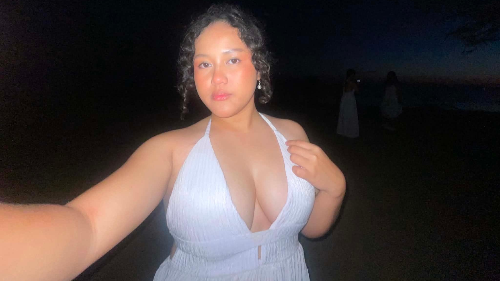

falling in love with you was my best decision i've ever made. hindi ko siya pinlano at hindi ko rin inaasahan, pero dahan-dahan mong binago yung mundo ko. hindi dahil perpekto ka, kundi dahil totoo ka. sa lahat ng ingay at gulo, ikaw yung naging tahimik na lugar kung saan okay lang mapagod. loving you made me realize na ang pagmamahal hindi palaging masaya, pero palaging may dahilan para mag-stay. natutunan kong magmahal kahit may takot, kahit hindi sigurado, basta ikaw yung kasama. sa mga araw na mahina ka, mas pinili kitang intindihin kaysa husgahan. hindi kita minahal dahil madali, minahal kita dahil ikaw yun, at hanggang ngayon, hindi ko pinagsisisihan kahit isang beses. kasi sa lahat ng choices ko sa buhay ikaw yung desisyong nagbigay ng kahulugan sa araw-araw ko. falling in love with you was my best decision i've ever made. at kung may isang bagay akong sigurado, ikaw pa rin ang pipiliin ko hindi dahil kailangan, kundi dahil gusto ko. if you ever see this mahal, lagi mong tatandaan na mahal na mahal kita i replay everything in my head, not because i think i can fix it, but because part of me refuses to let it be small. l'll be your kakampi sa lahat ng matter what happened remember i'm always here for you kapag inaaway ka na naman nila nandito lang ako para makikinig ako kahit gaano pa man katagal iyan basta palagi mong tatandaan na kahit anong mangyari nandito lang ako gaano kakabigat iyan makakaraos ka din diyan tiwala lang always stay positive okay po?? dito ako makikinig sayo, i love you so much i don't want to looose you baby, please take care of yourself palagi kumain ka sa tamang oras at huwag mong papabayaan sarili mo okay baby?? hindi mo kailangan magpanggap na okay ka sabihin mo lang lahat ng nararamdaman mo okay lang sa akin safe ka dito sa akin ha remember that palagi. laban lang my baby, if you feel that you're wasn't enough you're always enough don't think na hindi ka enough actually you're too much nanga and i'm so proud palagi sa mga achievements mo hindi man sila proud sa'yo ako proud na proud sa'yo all right??When you're drained, and tired? I'm here for you, always here for you. I'll listen to your problems, cry all you want, I'm just here for you anytime everything, all the deep pains you feel, I'm always here for you love, l'll heal you. I just want to you know how much you truly mean to me, you’re not just someone i care about, you’re someone i carry with me in every thought, every quiet moment, every hope for the future, your presence in my life brings warmth, confort, and a sense calm that's hard put into words. even on your toughest day, please remember that you’re never alone, I see your heart, i believe in your strength, and i'll always be here, cheering for you, supporting you, and loving you in every way i can, you matter more than you knowSa pagitan ng katahimikan at ingay ng araw, may salitang paulit-ulit na bumabalik sakin, mahal kita, kahit hindi laging binibigkas. Hindi ‘to sigaw, kundi bulong sa pagitan ng paghinga, parang hangin na hindi mo nakikita pero ramdam mo sa sarili mong balat. Minsan tahimik ko nalang tinitingnan ang mundo, at doon ko naiintindihan, ang salitang “mahal kita” ay hindi laging kailangang ipaliwanag, dahil minsan, sapat na ang pagdamdam. Kung may paraan man para ipunin ang oras, gagawin ko, para sa bawat segundo, may “mahal kita” na hindi nauubos. Until then, i’ll let myself feel it. Mahal kita, mahal na mahal kita.Kung ako'y papipiliin ng Diyos ng isang taong nakapagpaligaya sakin ng lubusan, ikaw ang aking pipiliin hindi dahil sa kadahilang mahal kita kundi dahil sa mga ngiti mong tila bitwin kung kuminang. Maaari niyong sabihing ako'y nahihibang na sa binibining ito dahil oo aminado ako na nahihibang na nga ako. Nahihibang sa ngiti niyang parang bitwin kung kuminang, sa boses niyang parang tunog ng isang plauta at sa mga mata niyang parang isang uniberso. because loving you was real, and losing you doesn’t erase that. i just wanted to say thank you to you, thank you for making me feel cherished and loved by you. thank you for always making time for me. thank you for always caring for me. even though di pa po kita tapos mahalin i have no choice but to move on po. just know po if you have any heavy problems andito lang po ako palagi, ingat ka lagi ha take care of yourself po ha. and i hope he will treat you better than i did. I love you more than words can express, and god knows how much you mean to me. I'm willing to give everything that i can mamahalin kita hangga't kaya ko. I'll choose you over everything, over anyone, every single time. I'll always be there for you to cheer you up, to support you, to listen to you, at maging number one na proud sa'yo sa lahat ng achievements mo, maliit man o malaki and no matter what happens, l'Il always be here hindi kita iiwan through your good days and bad days, through your smiles and tears, sasamahan kita i want to be your comfort, your safe place, and your home yung taong pwede mong takbuhan kapag pagod ka na sa mundo hindi man ako perpekto at marami man akong pagkukulang, i promise to always try my best for you araw-araw pipiliin kita, mamahalin kita, at aalagaan kita i will grow with you, fight for us, and stay by your side kasi ikaw yung taong gusto kong makasama habang buhay ikaw yung pahinga ko, yung saya ko, at yung future ko and as long as god allows me. Sa bawat tibok ng puso, ikaw ang awit ng aking kaluluwa. Sa dilim, ikaw ang liwanag; sa lungkot, ikaw ang ginhawa. Pag-ibig mo’y tadhana, yakap na walang hanggan, halik na walang kapantay, pangarap na walang wakas, hiwaga ng walang hanggang pagmamahal.I loved you, i really did. not in the loud, reckless way, but in the way a man stays when it would’ve been easier to leave. i fought for us quietly, consistently, with patience i didn’t even know i had. i bent parts of myself just to make space for you, and i never once thought of it as a loss back then. i thought love was supposed to hurt a little, supposed to ask you to endure. but loving you didn’t save us. effort didn’t turn into a miracle. all that wanting, all that choosing, still wasn’t enough to change the ending. and that’s the part i keep sitting with, the idea that you can do everything right and still lose someone. no grand betrayal. just two people wanting different things at different depths. i replay everything in my head, not because i think i can fix it, but because part of me refuses to let it be small. what we had mattered to me. you mattered to me. i hate how easy it looks from the outside, like it was just another story that ended. it wasn’t. it lived in me. it shaped the way i speak, the way i wait, the way i love now. i don’t blame myself the way i used to. i showed up. i stayed honest. i loved you in the only way i knew how, fully, even when it scared me. if that wasn’t enough, then maybe it was never about my lack, but about timing, about alignment, about things no amount of fighting could fix. i’ll miss you without chasing you. i’ll remember you without reopening wounds. and one day, the yearning will soften into something quieter, not gone, just gentler. until then, i’ll let myself feel it. because loving you was real, and losing you doesn’t erase that.I know I’m not perfect, and I know I’m not always easy to understand. Sometimes I struggle to explain what I feel, and it comes out the wrong way. I can see how that makes things harder between us.
There are moments when I don’t handle things the way I should, and I know that affects you. But I want you to understand that I’m really trying my best. It’s not just me failing again and again—I’m learning from everything, even if it takes time for it to show. I may not always say the right words or act the right way, but what I feel is real. You matter to me, and that’s why I’m trying to grow and understand things better, not just for you but for myself too. I’m still figuring things out, and I know I still have a lot to improve. I’m not easy to understand sometimes, but I’m willing to work on that. I’m not giving up on becoming better, and I hope you can see that I’m really trying. I'll be your kakampi sa lahat no matter what happens remeber I'm always here for you, kapag inaaway ka nanaman nila nandito lang ako makikinig ako kahit gaano pa man katagal yan, basta palagi mong tandaan na kahit ano nangyari nandito ako gaano kabigat yan, always stay positive oki? dito ako makikinig sayo at pwedeng pwede mo kong sandalan sa balikat oki? ilysm I don't want to loose you :(, always here for you. I'll listen to you. When you're drained, and tired? I'm here for you, always here for you. I'll listen to your problems, cry all you want, I'm just here for you anytime everything, all the deep pains you feel, i'll here for you love, l'll heal you, and i'll stay with you forever.
